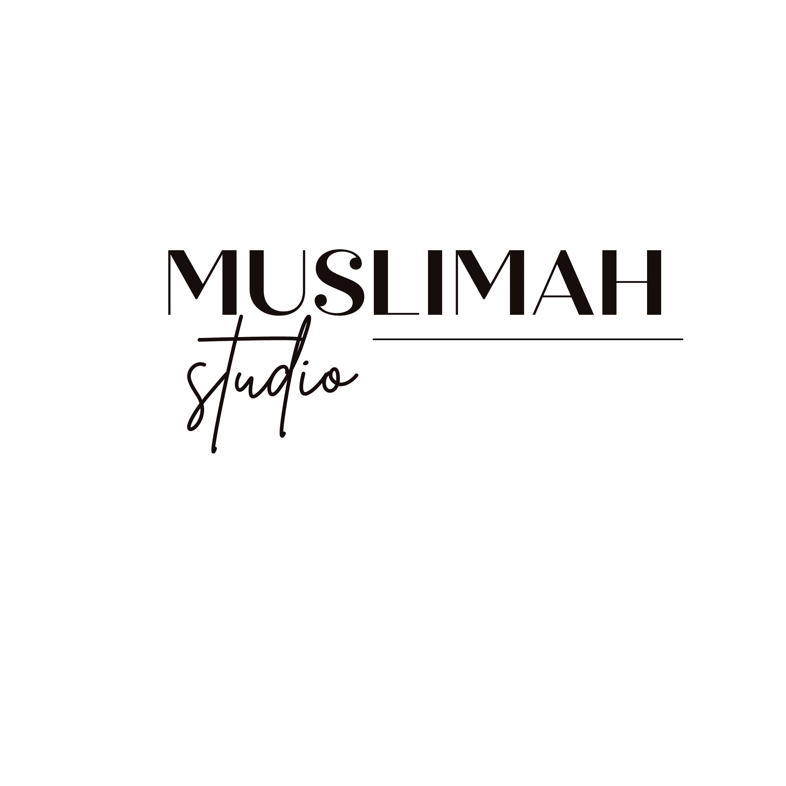

Próximamente
Guía práctica
El Kit Esencial del Musulmán
Adhkar, súplicas, hábitos y herramientas para construir una rutina diaria con barakah.
Ver ebook
Aprendizaje con fe
Recursos islámicos en español, ebooks, cursos y herramientas para fortalecer la fe y construir una vida con barakah.
Ebooks
Guía práctica
Adhkar, súplicas, hábitos y herramientas para construir una rutina diaria con barakah.
Ver ebookProductividad con fe
Una guía para organizar tus días sin perder de vista tu fe, tus prioridades y tu bienestar.
Ver ebookBLOG
Recordatorios, reflexiones y artículos para ayudarte a fortalecer tu fe día tras día.
Adhkar
Descubre los recuerdos diarios que forman parte de la Sunnah y llenan tu día de barakah.
Leer artículo →Espiritualidad
Cómo pedir perdón a Allah puede transformar el corazón y la vida del creyente.
Leer artículo →Islam
Una guía sencilla para quienes desean acercarse más a Allah paso a paso.
Leer artículo →RECURSOS GRATUITOS
La guía esencial con árabe, transliteración y traducción.
Descargar gratisLas súplicas más importantes para el día a día.
PróximamenteDescubre todos los recursos gratuitos disponibles.
Ver recursosNuestra historia
Muslimah Studio nació con el propósito de compartir recursos islámicos en español de una forma clara, práctica y accesible.
Aquí encontrarás contenido pensado para ayudarte a fortalecer tu relación con Allah, seguir aprendiendo sobre el Islam y construir una vida con más propósito y barakah.
No se trata de alcanzar la perfección, sino de avanzar paso a paso, adquirir conocimiento beneficioso y convertirlo en acciones que transformen nuestra vida.
Muslimah Studio quiere acompañarte en ese camino mediante ebooks, cursos, recordatorios y herramientas prácticas en español.
<